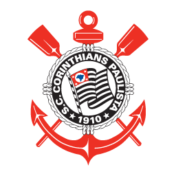
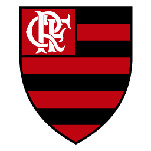
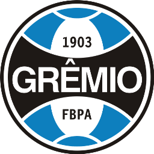
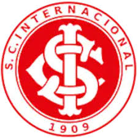
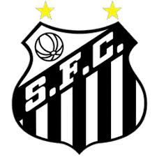
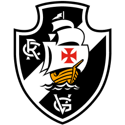
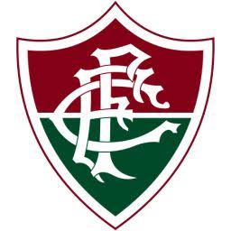
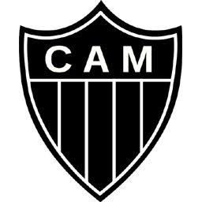

Conheça os 12 melhores times do país.
A liga brasileira de futebol é uma das que conta com os melhores times do mundo, times com muita história, títulos e representatividade no esporte!

Equipes em destaque

Palmeiras
Um dos maiores clubes do futebol brasileiro, conhecido por sua grande história.
Corinthians
Um dos clubes mais populares do país, marcado pela força de sua torcida.
Flamengo
Um dos clubes mais populares do Brasil, com uma torcida apaixonada.Cruzeiro
Um dos grandes clubes de Minas Gerais, com uma história cheia de conquistas.Botafogo
Clube tradicional do Rio de Janeiro, conhecido por sua história no futebol.
Gremio
Clube tradicional do Sul do Brasil, conhecido por sua força e sua torcida.
São Paulo
Clube tradicional do futebol brasileiro e paulista, conhecido por suas grandes conquistas.
Internacional
Um dos principais clubes do futebol gaúcho, com uma grande história.
Santos
Clube histórico que revelou grandes jogadores e marcou o futebol brasileiro.
Vasco da Gama
Clube de grande tradição no Brasil, conhecido por sua história e sua torcida.
Fluminense
Um dos clubes mais tradicionais do Rio de Janeiro e do futebol brasileiro.
Atlético-MG
Clube mineiro de grande tradição, conhecido pela paixão de sua torcida.